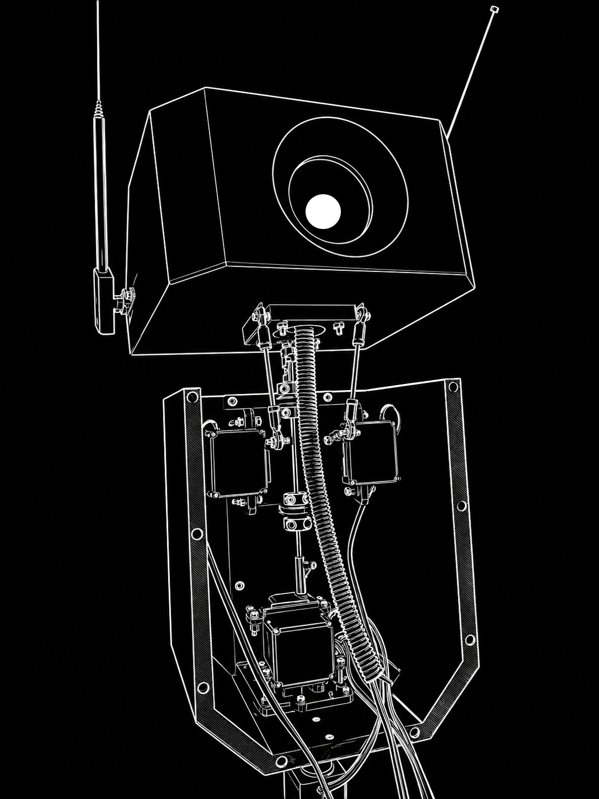

me/about_me
Hi, I'm Julian.
I'm a robotics enthusiast and engineer with a passion for creating innovative solutions in the field of robotics. My main focus is on developing autonomous systems and human-robot interaction technologies, particularly in the areas of perception and control using ROS2 and SLAM algorithms.
This site serves as documentation for all of my different projects, as well as a personal website where I can talk about things I'm interested in.
You can use the navigation sidebar to visit my different posts and documentation.
misc/friends
Here are some of my friends websites:
projects/humanoid_robot/head
2026-PRESENT
I first developed the head for my humanoid robot as a way to explore the capabilities of different sensors and actuators. This involved integrating several servo motors to create a responsive and interactive head mechanism. Part of this design was inspired by the design used to create puppeted heads from the Stan Winston School of Character Arts. I wanted to create a head that could move in a lifelike manner, with the ability to express emotions and react to its environment.
The neck uses a stuart-platform design, which allows for a wide range of motion while maintaining stability. This design choice was crucial in enabling the head to perform complex movements without compromising its structural integrity while preserving the simplicity of the design. As such, the head is equipped with multiple degrees of freedom, allowing it to tilt, rotate, and nod, which adds to its realism and functionality. In the middle of the head, is a single monocular eye, which is purely for aesthetic purposes, and is not currently equipped with any sensors. However, I plan to add a depth camera in the chest of the robot in the future, which will allow the robot to perceive its surroundings and interact with them in a more meaningful way.
[You can find a link to a demo of this project here]

Depiction of the robot head and chest
projects/humanoid_robot/base
WIP
me/interests
Aside from robotics and ROS, some of my personal interests include game modding. I'm currently working on a sub-mod for the 4X strategy game Europa Universalis IV. The submod is based on the mod Anbennar, which is a fantasy overhaul mod. Once I'm done with it, all probaly post it here, so that anyone can check it out :]